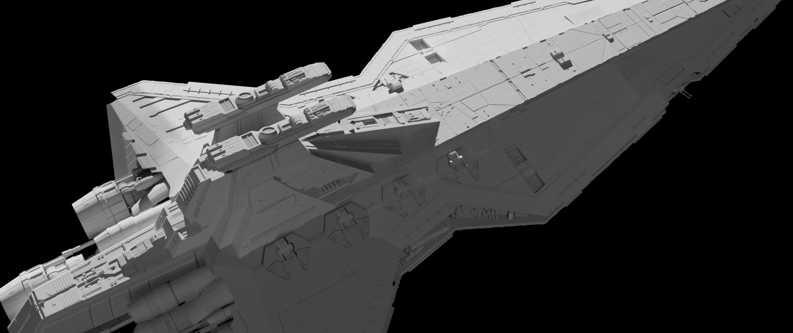
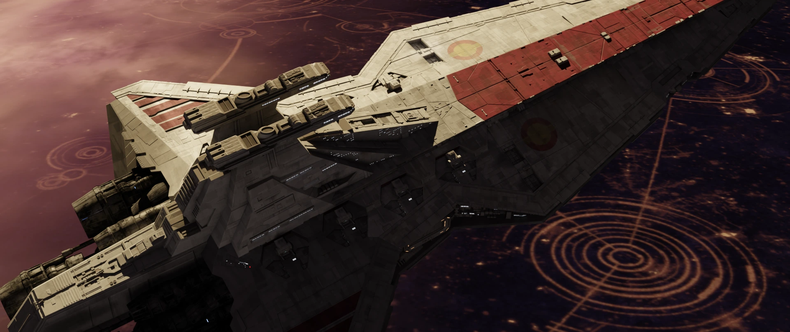
01 Venator Above Coruscant
Open breakdown ↗Lighting TD / Compositor
Technical Artist / Pipeline TD
I combine lighting, look development and compositing with technical problem-solving and Python tool development.
Lighting, look development, compositing and cinematography. Explore the case studies for my contribution and process.
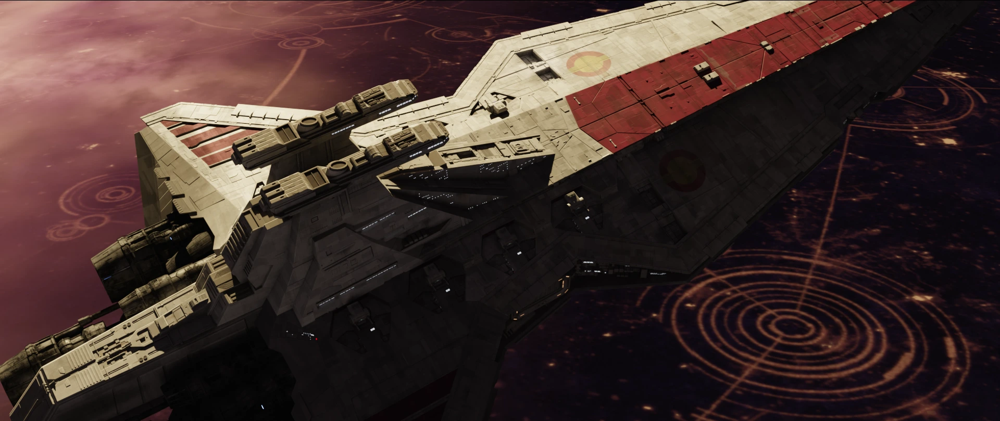
The embedded player is unavailable. Watch the principal showreel on Vimeo.
Watch on VimeoSee the work and my specific contribution in these case studies.
SpaceshipLook development · lighting · rendering · compositing Broken HorizonsLighting · cinematography · rendering Norwegian LakesideLighting · look development · composition Snowbound EnvironmentLighting · camera · colour correctionFinal images, the decisions behind them and my contribution to each project.
Shot lighting, materials and the final composite.
← → Browse projects · Enter Open
My role Lighting · look development · rendering · compositing
A single-frame sunset study, from material and light diagnostics to the final Nuke composite.
Katana · RenderMan · Nuke
 LIGHTING TD · LOOK DEVELOPMENT
LIGHTING TD · LOOK DEVELOPMENT
My role Look development · lighting · rendering · compositing
A 360-frame USD shot with RenderMan AOVs, production diagnostics and a controlled Nuke finish.
Blender · USD · Katana · RenderMan · Nuke · Python
 LIGHTING TD · LOOK DEVELOPMENT
LIGHTING TD · LOOK DEVELOPMENT
My role Look development · lighting · rendering · compositing
A complete shot workflow with procedural weathering, RenderMan AOVs and a controlled Nuke finish.
Maya · Katana · RenderMan · OSL · Nuke · Python
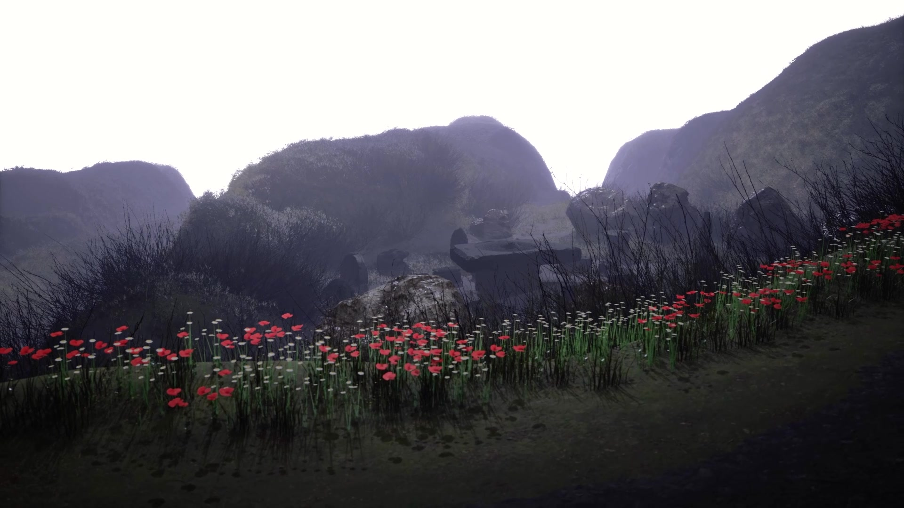
LIGHTING & LOOK DEVELOPMENTMy role Lighting · cinematography · rendering
A group cinematic exploring overcast light, atmospheric depth and visual storytelling.
Unreal Engine · Lumen · Movie Render Queue
Tools for render validation, verified rendering and versioned USD handoff between applications.
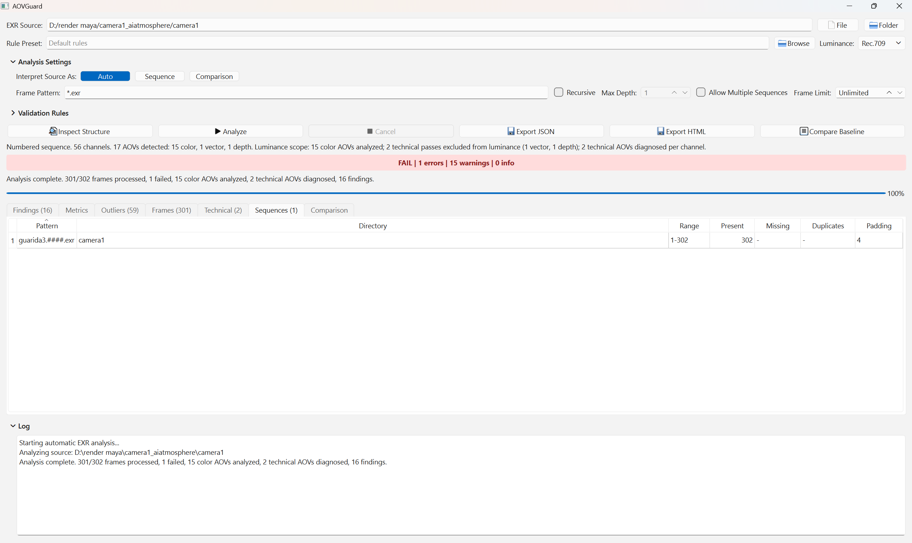
PIPELINE DEVELOPMENTMy role Product design · pipeline architecture · Python development
Find unreadable frames, missing passes and unusual changes in EXR sequences before compositing.
Python · OpenEXR · NumPy · PySide6 · pytest
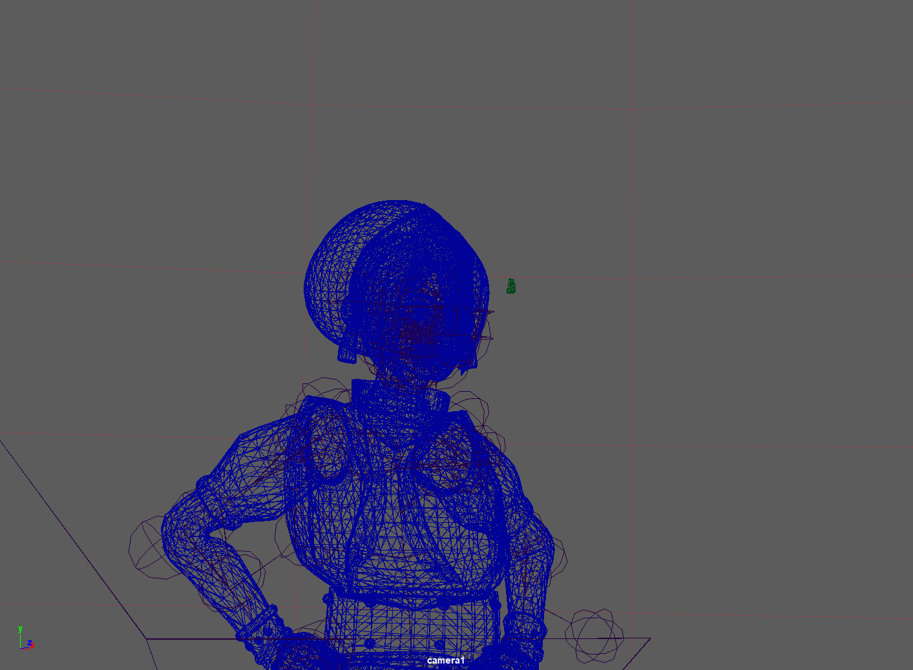
01 · MAYA SCENE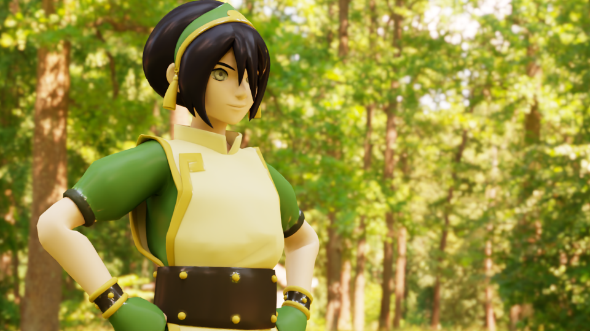
02 · ARNOLD BEAUTY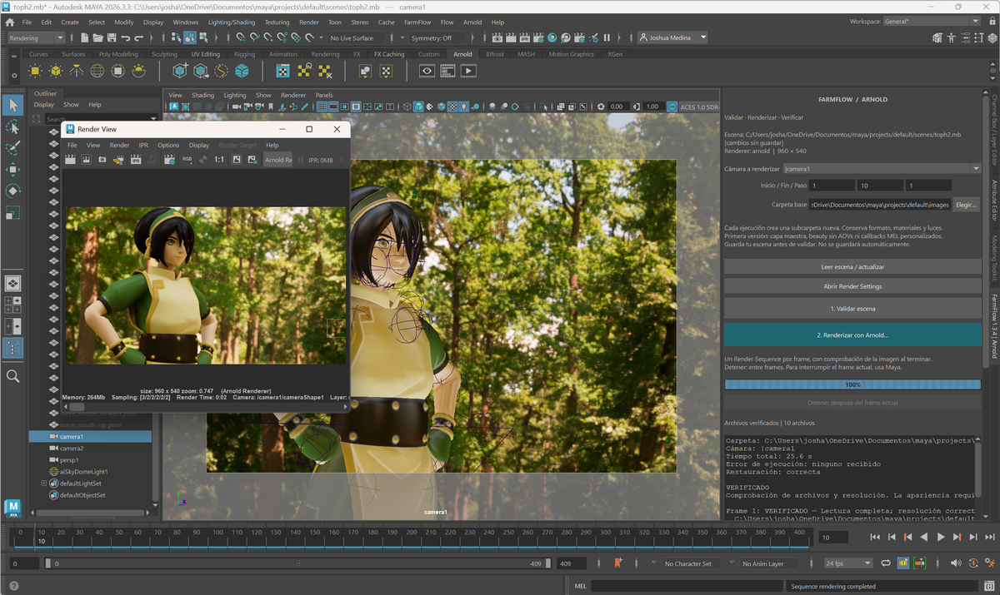
03 · EXR VERIFIEDMy role Python development · Maya integration
Check a Maya scene, run Arnold renders and verify the output files in one repeatable workflow.
Python · Maya · Arnold · OpenImageIO
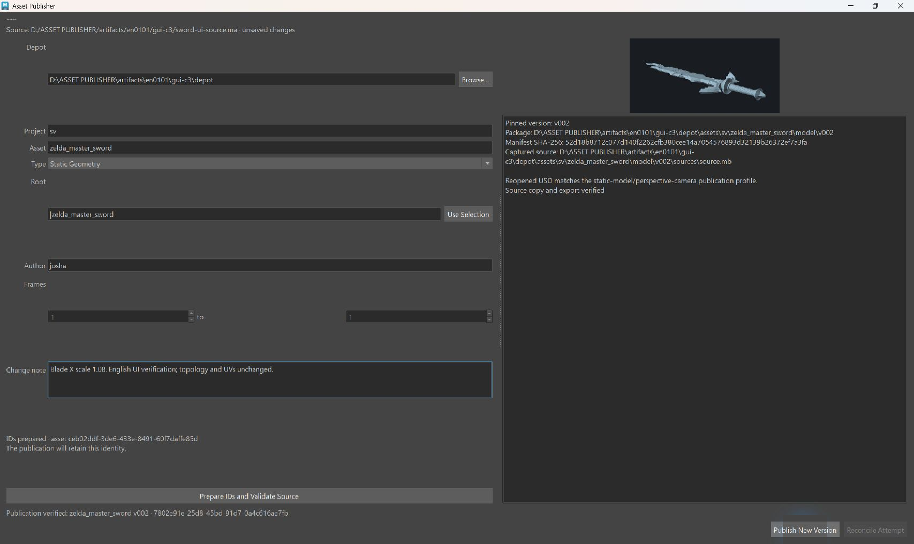
USD ASSET PIPELINEMy role Pipeline architecture · Python development · Maya & Katana integration
Publish versioned USD assets, review changes and update a Katana shot while preserving its lighting and shaders.
Python · USD · Maya 2026 · Katana 9.0v3
The case studies distinguish implemented features, documented tests and integrations that remain simulated or unverified.
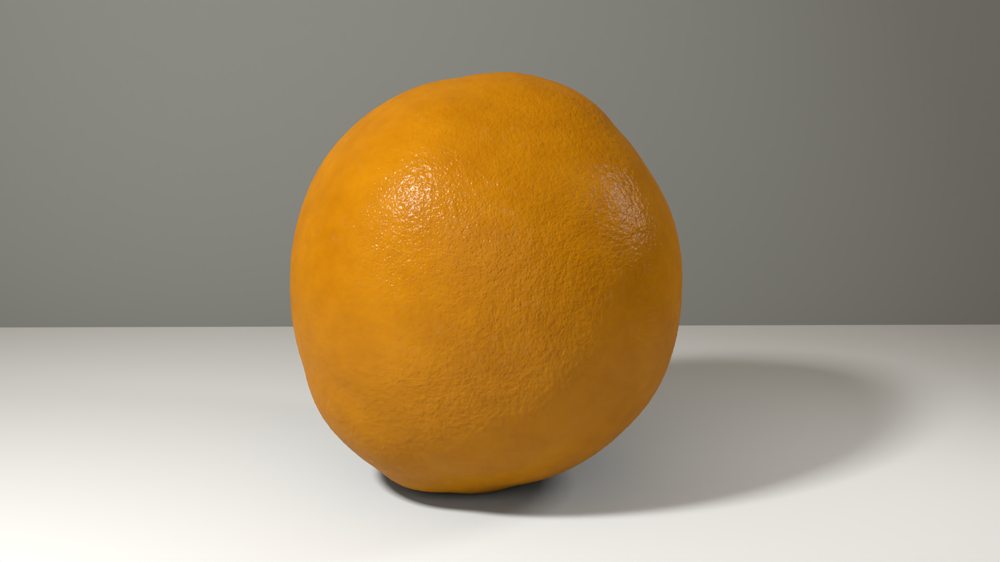
LIGHTING & RENDERINGMy role Procedural geometry · materials · lighting
Exploring realism through surface detail, materials and light.
Python · RenderMan · RIB · HDRI
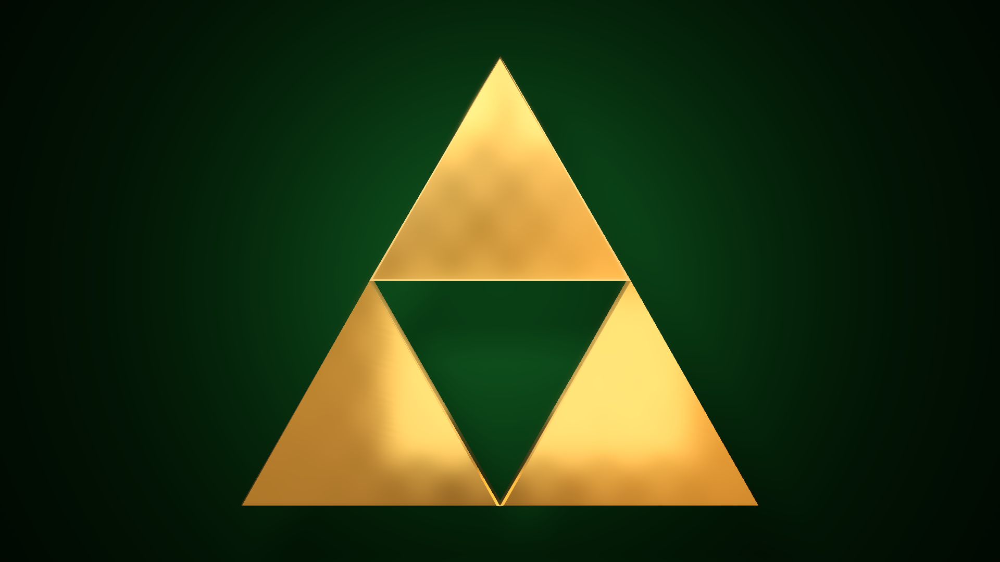
RENDERING ENGINEERINGMy role Renderer development · PBR shading
A CPU renderer evolved into a physically based metallic look-development tool.
Python · NumPy · Numba · Cook–Torrance · HDRI
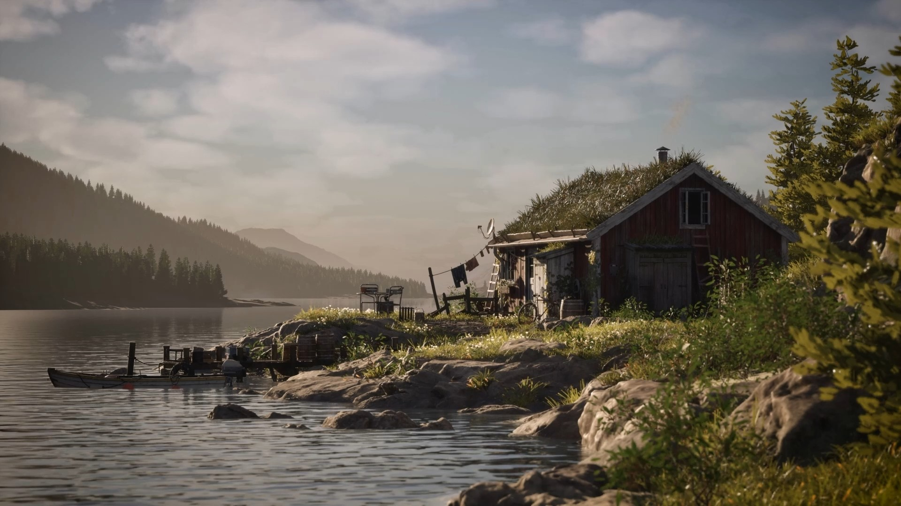
ENVIRONMENT LIGHTINGMy role Lighting · look development · composition
Natural daylight, reflective water and a warm visual rhythm across a Nordic retreat.
Lighting · Look Development · Composition
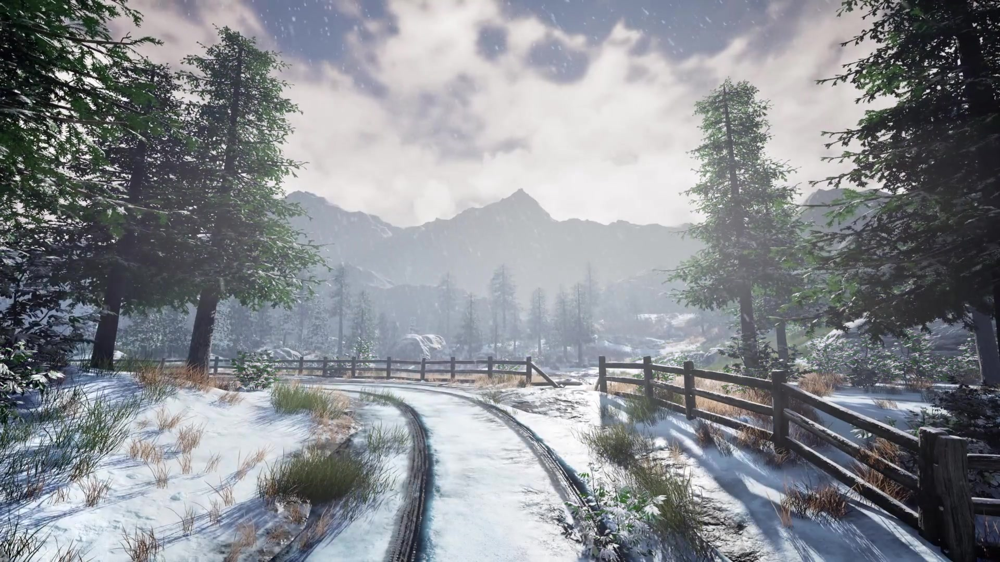
ENVIRONMENT LIGHTINGMy role Lighting · camera · colour correction
Winter daylight, atmospheric depth and a cinematic grade for a mountain landscape.
Unreal Engine · DaVinci Resolve
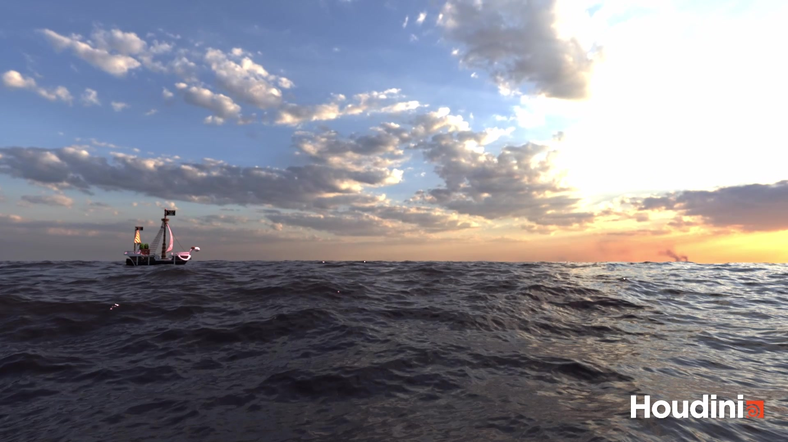
FX & SIMULATIONMy role FX simulation · lighting · scene assembly
Ship–water interaction, from a FLIP region to an open ocean.
Houdini · FLIP · Solaris · Karma
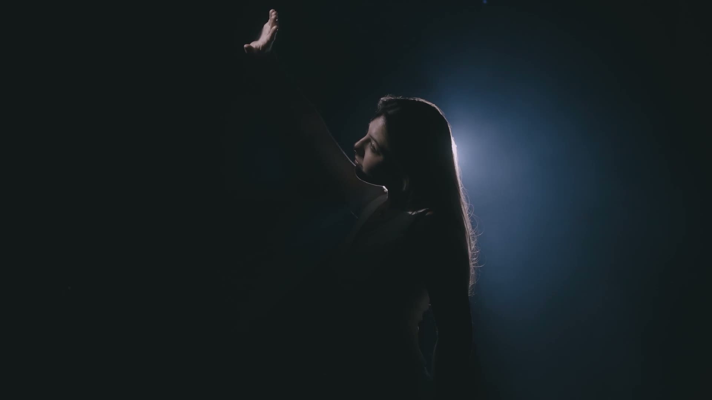
LIVE-ACTION CINEMATOGRAPHYMy role Director · Cinematographer · Camera Operator
Live-action work spanning natural-light portraits, low-key interiors and visual storytelling.
Camera · Composition · Light
Compare the final image with a diagnostic pass. Drag, tap a preset or use the arrow keys on each comparison.


01 Venator Above Coruscant
Open breakdown ↗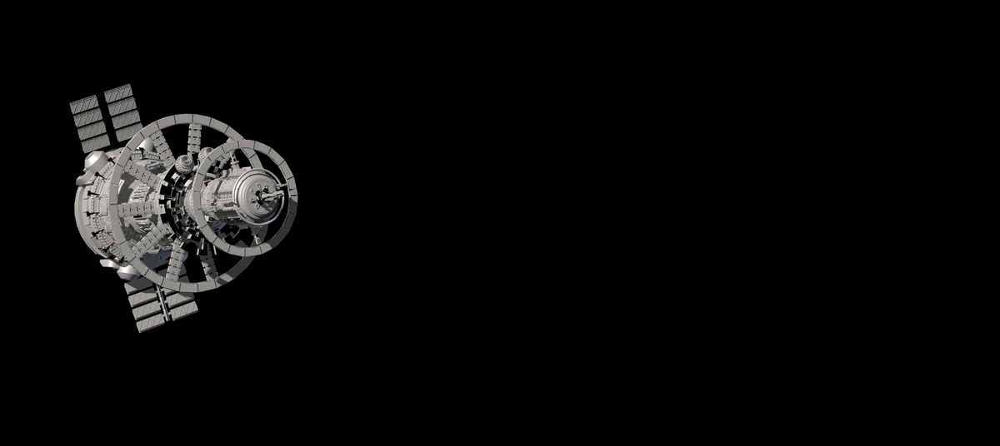
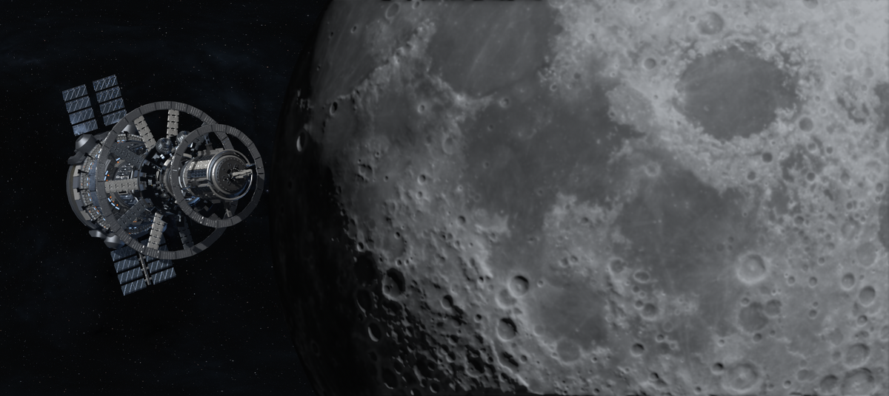
02 Spaceship
Open breakdown ↗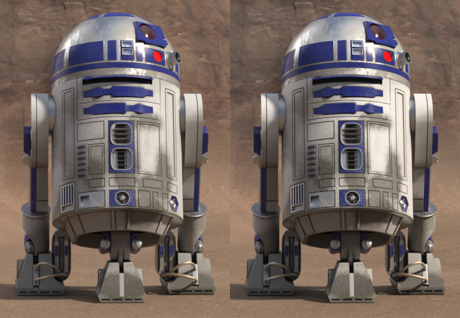
[PASS: FINAL COMP][PASS: RAW RENDER]03 R2-D2 Desert Look Development
Open breakdown ↗I'm Joshua Medina — a Lighting TD, Compositor, Technical Artist and Pipeline TD. I approach image-making through light, composition and the practical systems that support a shot.
My cinematography background informs how I work with motivated light and framing. My CG projects connect look development and compositing with procedural shading, render diagnostics and Python tools.
I completed my MSc in Computer Animation & Visual Effects at Bournemouth University, following specialised CG lighting study at Lost Boys.
Bournemouth University
Lost Boys | School of VFX
Six-month specialised programme · Katana · Arnold · Nuke
Universidad Autónoma de Guadalajara (UAG)
Lighting TD / Compositor · Technical Artist / Pipeline TD
Experience, selected projects, skills and education. The PDF opens in a new tab.
View CV PDF Download PDFGet in touch about lighting, compositing, technical art or pipeline opportunities.
Joshalexmedina@hotmail.com